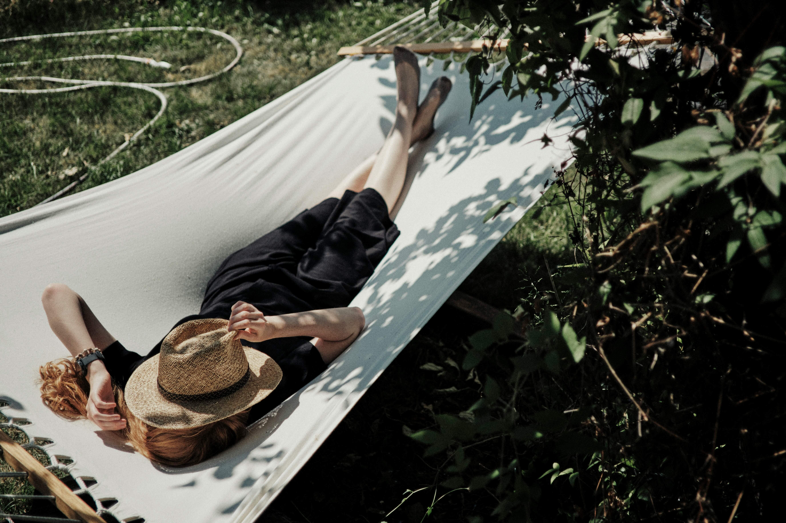
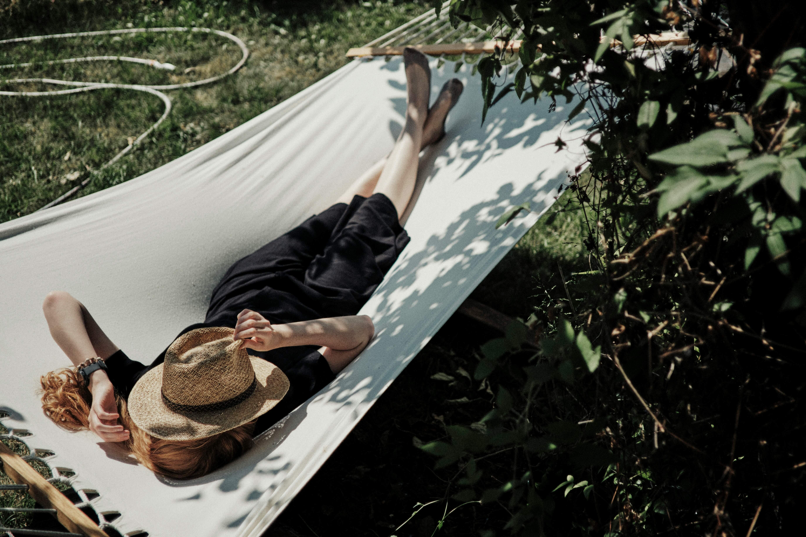

Тревожное фоновое напряжение
Постоянное ожидание плохих новостей, проверки мессенджеров, давление «надо делать» даже в отдыхе — всё это оставляет мозг включённым, даже когда тело вроде бы отдыхает.
Почему мы устаём даже от отдыха
И как начать восстанавливаться по-настоящему
Постоянное ожидание плохих новостей, проверки мессенджеров, давление «надо делать» даже в отдыхе — всё это оставляет мозг включённым, даже когда тело вроде бы отдыхает.
Поток звуков, уведомлений, переключений внимания — у мозга нет паузы. Даже «приятные» раздражители вроде музыки или разговоров могут утомлять, если нет тишины.
Иллюзия расслабления: мы прокрастинируем и убеждаем себя, что отдыхаем, но на деле получаем ещё больше тревожной информации.
Сон сбит, питание хаотично, дни сливаются. Без структуры отдых не работает: тело не получает сигнала «можно выдохнуть».
Гаджеты светят, экраны мигают, звук вокруг постоянный. Нашему организму физически трудно переключиться в «режим восстановления».
В моменты усталости наш ум мечется между задачами, тревогами и ожиданиями. Чтобы выйти из этого круга, достаточно на минуту замедлиться. Закрой глаза. Почувствуй опору под ногами. Обрати внимание на дыхание — как воздух входит и выходит. Это простое действие переключает мозг в режим «здесь и сейчас», снижает уровень тревоги и позволяет почувствовать тело. Можно представить, как ты стоишь на земле и через стопы проходит тёплая, спокойная энергия. Это и есть заземление — возвращение к себе.
Мы настолько привыкли к фоновому шуму, что не замечаем, как он истощает. Попробуй хотя бы 5 минут в день провести без звука — без музыки, голосов, даже без вентилятора. Просто тишина. Сначала это может быть непривычно, даже тревожно. Но именно в тишине лучше всего слышно, что происходит внутри. Молчание — это пространство, где можно перевести дух, отдохнуть от внешнего и нащупать своё.
Даже когда мы «ничего не делаем» и листаем ленту, мозг продолжает перерабатывать огромное количество информации. Попробуй на час отложить телефон, выключить монитор и просто побыть. Пройтись. Приготовить чай. Посидеть у окна. Это не потерянное время, а настоящее восстановление — тот момент, когда твоя система не перегружена внешними раздражителями.
Пища может быть не только топливом, но и заботой. Осознанный отдых включает в себя заботу о теле: регулярное питание, простые блюда, приготовленные без спешки. Тёплая каша, суп, запечённые овощи. Вода, горячий чай. Всё, что не стимулирует, а насыщает и успокаивает. Главное — не ешь «на бегу». Даже пара минут тишины за столом — уже вклад в восстановление.
Многое из того, что мы делаем в свободное время, на самом деле связано с ожиданием результата: «прокачаюсь», «расслаблюсь», «будет полезно». Но самый глубокий отдых приходит, когда ты просто есть. Без продуктивности. Без цели. Полистать книгу, которую давно хотела перечитать. Рисовать без таланта. Писать от руки. Погулять без маршрута. Это не бесполезность — это возвращение к жизни в полной её тишине и силе.
 
